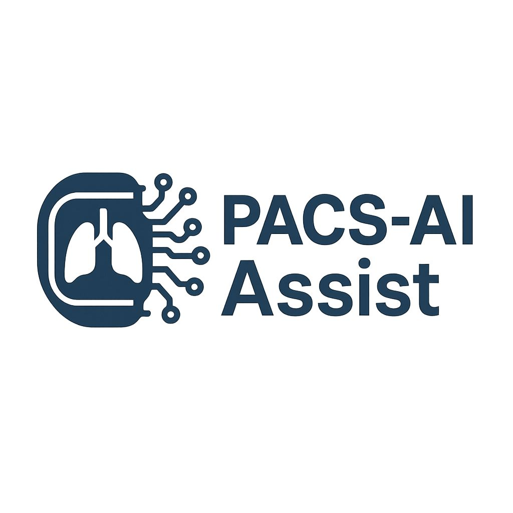

Paciente
ID: –
Nombre: –
Nacimiento: –
Sexo: –
Estudio TAC de tórax
Fecha: –
Descripción: –
Modalidad: CT
Serie examinada: –
El análisis asistido por IA se visualizará desde el visor OHIF.

ID: –
Nombre: –
Nacimiento: –
Sexo: –
Fecha: –
Descripción: –
Modalidad: CT
Serie examinada: –
El análisis asistido por IA se visualizará desde el visor OHIF.
| Serie | Imágenes | Modalidad |
|---|---|---|
| Cargando información del estudio… | ||